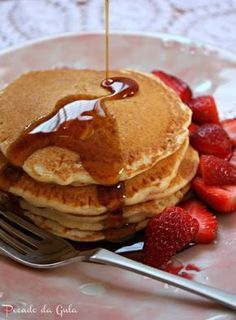
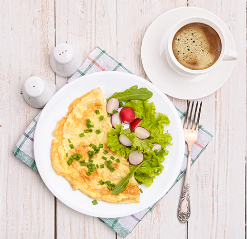
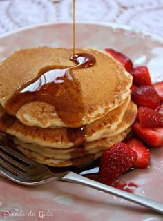
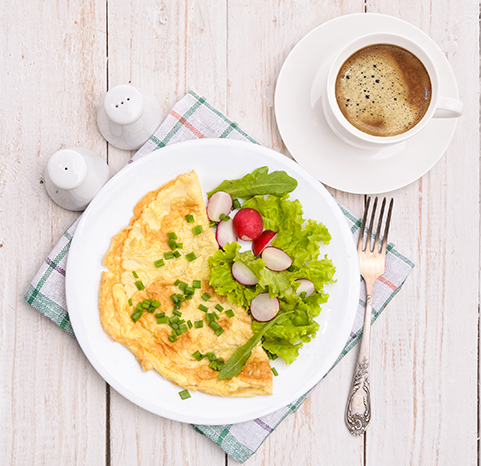

8 sugestões para um café da manhã saudável, delicioso e fácil de fazer!
2021.06.21 21:33
Políticas do Blog Anuncie Contato Instagram Facebook Pinterest YouTube Sobre Brasil Mapa do Brasil Centro-Oeste Distrito Federal Goiás Norte Amazonas Pará Tocantins Nordeste Alagoas Bahia Ceará Maranhão Paraíba Pernambuco Piauí Rio Grande do Norte Sudeste Espírito Santo Minas Gerais Rio de Janeiro São Paulo Sul Paraná Santa Catarina Mundo Mapa Mundi África África do Sul Moçambique América do Sul Argentina Bolívia Chile Colômbia Peru Uruguai Venezuela América do Norte Estados Unidos México Europa Alemanha Bélgica Espanha França Holanda Itália Portugal Ásia Maldivas Tailândia Oceania Austrália Polinésia Francesa Dicas de Viagem Ecoturismo Hospedagem Praia Trekking Urbana Dicas Valiosas Planeje sua viagem Aluguel de Carro Internet 4G no Exterior Reserva de Hotéis Seguro Viagem Tickets antecipados Bem-Estar Dicas de Alimentação Inspirações Opções Saudáveis pelo Mundo Quarentena Preparação para Trekking Expedição Loja Sobre Brasil Mapa do Brasil Centro-Oeste Distrito Federal Goiás Norte Amazonas Pará Tocantins Nordeste Alagoas Bahia Ceará Maranhão Paraíba Pernambuco Piauí Rio Grande do Norte Sudeste Espírito Santo Minas Gerais Rio de Janeiro São Paulo Sul Paraná Santa Catarina Mundo Mapa Mundi África África do Sul Moçambique América do Sul Argentina Bolívia Chile Colômbia Peru Uruguai Venezuela América do Norte Estados Unidos México Europa Alemanha Bélgica Espanha França Holanda Itália Portugal Ásia Maldivas Tailândia Oceania Austrália Polinésia Francesa Dicas de Viagem Ecoturismo Hospedagem Praia Trekking Urbana Dicas Valiosas Planeje sua viagem Aluguel de Carro Internet 4G no Exterior Reserva de Hotéis Seguro Viagem Tickets antecipados Bem-Estar Dicas de Alimentação Inspirações Opções Saudáveis pelo Mundo Quarentena Preparação para Trekking Expedição Loja Dicas de Alimentação
8 sugestões para um café da manhã saudável, delicioso e fácil de fazer!
publicado por Luísa Pires jul 15, 2020 CompartilharAqui no blog costumo sempre dar dicas de saúde e bem-estar, com o cuidado de escolher dicas que podem ser aplicadas para manter a qualidade de vida também nas viagens. Afinal, não queremos descuidar da nossa rotina saudável quando estamos em uma viagem, seja a trabalho ou para diversão, não é? Por isso, hoje vou dar uma série de dicas de café da manhã saudável .
Todas as dicas de receitas para cafés da manhã, além de serem ótimas para a saúde, são elaboradas com ingredientes fáceis de encontrar em qualquer lugar, mesmo em cidades onde não há grandes redes de supermercados.
ORGANIZANDO SUA VIAGEM Viaje com internet ilimitada e esteja sempre conectado Internet no Exterior Garanta seu desconto em qualquer seguro viagem Seguro Viagem Hospedagem de todos os tipos e melhores preços no mundo inteiro Hotel Compare os melhores preços em mais de 100 locadoras de veículos Aluguel de carro Visitas guiadas e excursões em todo o mundo com ingressos antecipados! TourAlém disso, muitas também são acessíveis, pra ajudar você a dar aquela economizada para a próxima viagem, e, obviamente, práticos também, afinal, você não quer ficar a manhã inteira cozinhando, não é?
Ah, super importante também: é preciso se planejar. Organize seu cardápio com antecedência e aproveite o primeiro dia da sua estada para comprar os ingredientes. Se possível, compre de pequenos estabelecimentos, assim você tem grandes chances de adquirir produtos mais frescos e de melhor qualidade, e ainda incentiva os pequenos comerciantes e produtores.
Vale a pena investir esse tempinho para cuidar da sua saúde e ainda economizar um pouco. E não deixe também de degustar essas ideias no seu dia a dia, é uma maneira de inovar, criar novo hábitos e conhecer novas receitas!
Antes começar com as receitas, vou deixar uma DICA EXTRA que consumo praticamente todos os dias e me dá uma energia incrível para me exercitar e trabalhar, ajudando ainda na queima de gordura! E o melhor, só com produtos naturais. O Supercoffee é um blend de 12 ingredientes naturais que inseri na minha rotina e tomo no meu café na manhã, seja no dia a dia ou em viagens.… Além de cremoso e gostoso, não contém lactose, glúten e açúcar. Serio, é DELICIOSO! No site da marca Caffeine Army tem todos os detalhes e informações dele e se ainda não conhece, pega o cupom levenaviagem para conseguir 15% off ! Se já conhece, sabe bem do que estou falando 🙂 No instagram do Leve na Viagem falo muito dos benefícios dele!
Dicas de café da manhã saudável
Não preciso mais lembrar a importância de um café da manhã saudável, não é? Ainda que em viagens a gente pode ter a tendência de comer mal e pular refeições, isso não é nada recomendável.
Um café da manhã saudável vai te dar aquela energia para as atividades do dia (sobretudo se você for fazer ecoturismo ou algum esporte de aventura, ou mesmo se seu roteiro for urbano, mas você vai caminhar muito) e vai segurar a fome até a hora do almoço. É bem desagradável aquela fome fora de hora, mais ainda quando não programamos uma pausa ou não há lugares confiáveis para comer por perto. Mas, além de dar saciedade e energia, ao mesmo tempo a sua primeira refeição do dia precisa ser leve e balanceada, para não deixar você com sensação de peso no estômago.
Está achando tudo isso uma tarefa muito difícil? Calma! Confira minhas dicas de café da manhã saudável e prático, para viajante nenhum botar defeito!
8 dicas para um café da manhã saudável e barato!
Separei aqui algumas opções de refeições simples e deliciosas para quem quer comer bem e ainda economizar um pouquinho. Não tem melhor, não é?
1. Mingau de aveia sem açúcar e também com opção vegana
O tradicional mingauzinho de aveia é uma ótima pedida para uma refeição rápida, saudável e barata. Se no seu destino estiver frio, então
É só misturar duas colheres de sopa de aveia em flocos finos ou grossos, ou farelo de aveia (como você preferir!) com uma xícara de leite (ou água). Depois, levar ao fogo baixo, mexendo sempre, até engrossar. Polvilhe canela por cima! Eu não uso açúcar, pois a dica é colocar rodelas de banana bem madura em cima e junto com a canela, vai ficar docinho!
Se você for vegano, pode substituir o leite de vaca por leite vegetal, fica muito gostoso também! Opte por leite de arroz, coco ou amêndoas caso seja possível encontrar no seu destino.
Caso você tenha uma programação bem intensa para o seu dia, pode querer um desjejum mais proteico. Nesse caso, quando o mingau estiver quase no ponto desejado, junte uma clara de ovo, mexendo bem. A clara agrega nutrientes à sua refeição, e, acredite, não altera em nada o sabor!
Para deixar o mingau termogênico (e ainda mais gostoso, eu acho!), acrescente uma colher de chá de gengibre cru e ralado, antes de levar ao fogo.
O melhor é usar algum açúcar do bem, como o mascavo, demerara ou açúcar de coco, ou, se quiser cortar calorias, usar um adoçante natural, como a stévia. Sinceramente? Não acho que precise adoçar, o pr ó prio açúcar da fruta ja deixa o mingau docinho!
Caso você seja celíaco, procure pela aveia sem glúten. O cereal naturalmente não possui glúten, porém, pode ser manipulado com equipamentos que também são utilizados para processar trigo. Por isso, é necessário que o produto venha com a especificação de ser adequado para celíacos.
2. Batida de banana com pasta de amendoim
Rápida e prática, esta batida faz qualquer um se deliciar e já começar o dia muito bem, visto que a banana é uma fonte riquíssima de vitaminas do complexo B, é uma forte aliada no combate às cãibras, pois auxilia na recuperação muscular, além de ajudar a regular o intestino e muito mais. Já a pasta de amendoim é uma excelente fonte de energia e força, por isso, essa combinação tem tudo pra deixar seu café da manhã saudável mais gostoso e enérgico.
Para fazer a batida, você vai precisar de duas bananas congeladas, uma colher de sopa e meia de pasta de amendoim, meia xícara de iogurte grego e mel para adoçar. Caso ache necessário, coloque leite de amêndoas ou de soja. O preparo é bem simples: basta misturar tudo no liquidificador até formar um líquido grosso e homogêneo.
E está pronta sua batida! Se você quiser, pode finalizar com amendoins triturados por cima, para dar um visual fofinho à sua bebida.
3. Panqueca de banana
Essa receita além de ser super saborosa e saudável é muito simples de preparar! Basta amassar bem uma banana (a nanica ou a prata são as mais indicadas) com um garfo, juntar um ovo, uma colher de farelo de aveia e uma de chá de canela, misturando muito bem, até ficar bem homogêneo. Leve a uma frigideira antiaderente aquecida (se não tiver, coloque um fiozinho de óleo de coco ou girassol), deixando tostar dos dois lados.
Fica uma delícia pura mesmo e é perfeita para acompanhar uma bela xícara de café ou chá. Mas, se quiser, você ainda pode complementar com geleia de frutas, pasta de amendoim, e castanhas!
Veganos também podem fazer essa receita! É só substituir o ovo por uma colher de sopa bem cheia de aveia ou farelo de aveia e ⅓ de xícara de leite vegetal, também fica maravilhoso! Se quiser, pode servir com melado por cima.
4. Frutas com iogurte
Essa opção de café da manhã também é bem simples e você pode preparar super rápido, de qualquer lugar que você esteja. Basta descascar e picar as frutas, como se fosse fazer uma salada, e colocar por cima iogurte natural ou grego. Se quiser, polvilhe um pouco de granola por cima, de preferência sem açúcar.
Além disso, prefira as frutas da estação e que sejam cultivadas o mais perto possível do local que você esteja. Essa medida garante que você irá comer frutas muito mais saudáveis e saborosas.
ORGANIZANDO SUA VIAGEM Viaje com internet ilimitada e esteja sempre conectado Internet no Exterior Garanta seu desconto em qualquer seguro viagem Seguro Viagem Hospedagem de todos os tipos e melhores preços no mundo inteiro Hotel Compare os melhores preços em mais de 100 locadoras de veículos Aluguel de carro Visitas guiadas e excursões em todo o mundo com ingressos antecipados! TourSe possível, escolha o iogurte sem sabores artificiais, açúcar ou adoçantes. Além de mais saudáveis e acessíveis, eles não vão “brigar” com o sabor das frutas. Dica extra! Acrescente cacau em pó e mel que fica uma delicia!!!
5. Creme de ricota
Essa pastinha é uma delícia para variar seu café da manhã, perfeita para comer com um pãozinho ou torradas.
A ricota é uma alternativa mais saudável à manteiga, margarina e o requeijão, já que é fonte de vitaminas e importantes minerais como o cálcio, o fósforo e o potássio.
Basta colocar no liquidificador cerca de 200 gramas de ricota fresca picada e uma colher de sopa de azeite. Acrescente aos poucos cerca de 100 mililitros de leite desnatado ou semidesnatado quente, até ficar em consistência de creme. Acrescente uma pitada sal e temperos a gosto e bata mais um pouco, até virar uma mistura homogênea.
Para os temperos, você pode usar salsa, cebolinha, cebola desidratada, curry, hortelã Além de passar no pão, também pode ser um ótimo recheio para omeletes ou panquecas salgadas. Se quiser algo doce, experimente passar no pão com umas gostas de mel hummmmm!
Caso não vá consumir tudo, o creme de ricota pode ser guardado na geladeira por até cinco dias, em um recipiente com tampa.
6. Overnight oats
Overnight oats é o mesmo que “aveia amanhecida”. São deliciosas e saudáveis, além de muito práticas, versáteis e rápidas de preparar.
Para fazer essa delícia, primeiro você precisa preparar a base na noite anterior: misture aveia (também há quem prefira fazer com chia, ou misturar os dois cereais das três maneiras fica ótimo) a leite ou iogurte (veganos podem usar leites vegetais como o de amêndoa, coco ou arroz, sem nenhum problema), e deixe-a hidratando até de manhã.
Depois, é só acrescentar a cobertura, que fica por conta da sua criatividade. Pode colocar frutas frescas ou secas, especiarias como a canela, o cravo e gengibre, coco, granola, pasta de amendoim, oleaginosas como nozes, castanhas ou macadâmia, chocolate com alto teor de cacau, geleia de frutas…
Se você quiser e achar mais prático, pode preparar a base da overnight oats e deixar na geladeira em potinhos para adicionar as coberturas que você quiser quando servir. A base da receita tem validade de até cinco dias, se refrigerada. Caso opte por guardar já com as coberturas, o ideal é consumir em até dois dias, a depender dos ingredientes que você escolheu.
7. Torrada com pasta de abacate
Com essa deliciosa pastinha de abacate você não vai nem lembrar que existe manteiga ou margarina!
Basta amassar bem metade de um abacate (ou um avocado) com um garfo, colocar o suco de meio limão, adicionar sal e pimenta preta moída a gosto. Colocar um ovinho cozido por cima deixa mais proteico e gostoso!
Fica uma delícia para acompanhar uma torrada e um ovo poché ou ovos mexidos. Caso você tenha intolerância a glúten, pode substituir a torrada por uma tapioca fresquinha, também fica uma delícia.
8. Smoothie de frutas
Quando a gente não acorda com tanta fome, mas precisa de energia para encarar as atividades do dia, nada melhor do que um smoothie, não é? Você já deve ter visto eles por aí nas redes sociais, pois nos últimos anos o seu consumo têm aumentado consideravelmente. E não é pra menos: eles são lindos, saborosos e saudáveis!
Como já disse, o melhor é escolher as frutas da estação, mas caso você disponha de frutas congeladas, pode usar também. Sua vitamina vai ficar com uma consistência incrível.
Aqui, é só soltar a imaginação: use como base leite de vaca ou vegetal, iogurte e frutas a seu gosto. Para acrescentar mais sabor e nutrientes, você pode colocar também granola, cereais, coco, frutas secas, hortelã…as opções são inúmeras, fica a critério do seu paladar. Eu adoro colocar chia, canela e as vezes pasta de amendoim!
Rotina saudável nas viagens: preparando suas refeições como se fosse na cozinha da sua casa
Em muitos hotéis e pousadas, é servido o chamado “café da manhã continental”, composto de pão ou croissant, café, leite, manteiga, e às vezes geleia. Ou também pode ser servido um buffet com grande variedade de opções, muitas vezes com mais calorias e nada saudáveis, como: bolos, doces variados, diferentes tipos de pão, queijos e frios
Claro, tomar um café da manhã assim é delicioso e não há problema em consumir esses alimentos de vez em quando, mas nada como fazer nossa própria refeição. Assim, podemos comer de maneira consciente, e usar ingredientes frescos e mais saudáveis no preparo, mantendo nossa rotina, mesmo longe de casa, durante as viagens.
Mas quando estamos, por exemplo, em quartos ou apartamentos de temporada como alugados pelo AirBnb é super possível preparar nosso próprio café da manhã ! Gosto de poder preparar minhas refeições com calma, escolhendo os ingredientes e cuidando de cada detalhe: assim eu continuo minha rotina de saúde e bem-estar fora de casa, com muita praticidade e economia!
Gostou das dicas? Espero ter conseguido mostrar que ter um rotina saudável exige apenas um pouco de planejamento e comprometimento. Hoje, com a ajuda da internet, isso é ainda mais fácil. Use tudo a seu favor!
Não deixe de conferir muitas outras dicas de alimentação:
10 RECEITAS FÁCEIS E SAUDÁVEIS PARA O DIA A DIA E PARA SUA VIAGEM! 10 CHÁS ENERGÉTICOS PARA SUA ROTINA E PARA SUA VIAGEM! 10 RECEITAS DE LANCHE DA TARDE FITNESS PARA VIAGEM OU PARA O DIA A DIAE se for viajar não esqueça de usar os links do Leve na Viagem.
DICAS DE ALIMENTAÇÃO Compartilhar ORGANIZANDO SUA VIAGEM Viaje com internet ilimitada e esteja sempre conectado Internet no Exterior Garanta seu desconto em qualquer seguro viagem Seguro Viagem Hospedagem de todos os tipos e melhores preços no mundo inteiro Hotel Compare os melhores preços em mais de 100 locadoras de veículos Aluguel de carro Visitas guiadas e excursões em todo o mundo com ingressos antecipados! Tour
Anterior
Lugares românticos para viajar em SP: explore a dois destinos incríveis!Próximo
Dicas e receitas típicas do norte: Viaje dentro de casa! Travel Blogger LUISA GALIZA Viajante profissional, colunista da Revista Qual Viagem e amante da natureza. Acredito que a prática do ecoturismo é uma ferramenta transformadora e que conhecer novos lugares, além de proporcionar uma viagem interior, promove conexão com a pluralidade do mundo. Vem comigo!Autora
ORGANIZE SUA VIAGEM
Easysim4u Seguros Hotel RentCars CivitatisPublicidade
Reserve sua hospedagem
Booking.comFaça seu Seguro Viagem
Alugue seu Carro
Top Categorias
1º Dicas de Viagem86 Matérias Relacionadas 2º Ecoturismo
63 Matérias Relacionadas 3º Urbana
51 Matérias Relacionadas 4º Praia
51 Matérias Relacionadas 5º Brasil
34 Matérias Relacionadas 6º Dicas de Alimentação
32 Matérias Relacionadas 7º Hospedagem
30 Matérias Relacionadas 8º Trekking
27 Matérias Relacionadas 9º Inspirações
26 Matérias Relacionadas 10º Trekking
25 Matérias Relacionadas
Você pode gostar também
maio 27, 2017Como manter a massa magra enquanto viajamos?
dez 19, 2017Dieta no final do ano, como lidar?
fev 26, 2017Alimentos que ajudam a curar ressaca durante sua viagem
set 13, 2019Viagem x Dieta: saiba como uma pode complementar a outra
Deixe um Comentário Cancelar resposta
Acompanhe as viagens no Instagram NÃO VIAJE PRA CHAPADA DOS VEADEIROS Se não for TOP 12 DA CHAPADA DOS VEADEIROS Aqui vai minha li TUDO SOBRE A CHAPADA DOS VEADEIROS!! Como descrev VOCÊ NÃO CONHECE A CHAPADA DOS VEADEIROS E nem TUDO SOBRE O LADO B DA CHAPADA DOS VEADEIROS! Já A MAIOR CACHOEIRA DA CHAPADA DOS VEADEIROS! A Cac Instagram Facebook Pinterest YouTube Sobre Brasil Mapa do Brasil Centro-Oeste Distrito Federal Goiás Norte Amazonas Pará Tocantins Nordeste Alagoas Bahia Ceará Maranhão Paraíba Pernambuco Piauí Rio Grande do Norte Sudeste Espírito Santo Minas Gerais Rio de Janeiro São Paulo Sul Paraná Santa Catarina Mundo Mapa Mundi África África do Sul Moçambique América do Sul Argentina Bolívia Chile Colômbia Peru Uruguai Venezuela América do Norte Estados Unidos México Europa Alemanha Bélgica Espanha França Holanda Itália Portugal Ásia Maldivas Tailândia Oceania Austrália Polinésia Francesa Dicas de Viagem Ecoturismo Hospedagem Praia Trekking Urbana Dicas Valiosas Planeje sua viagem Aluguel de Carro Internet 4G no Exterior Reserva de Hotéis Seguro Viagem Tickets antecipados Bem-Estar Dicas de Alimentação Inspirações Opções Saudáveis pelo Mundo Quarentena Preparação para Trekking Expedição Loja Copyrights © 2019 Leve na Viagem. Todos os direitos reservados.- 13 dicas para um café da manhã nutritivo - Caldo Bom
- Receitas de café da manhã: 7 opções para sair da rotina .
- 10 receitas de café da manhã saudável em até 5 minutos .
- Especial café da manhã - Panelinha
- Receita de Panqueca americana | CyberCook
- 8 sugestões para um café da manhã saudável, delicioso e .
- → 20 melhores RECEITAS PARA O CAFÉ DA MANHÃ .
- 11 receitas para o café da manhã para começar o dia bem
- 15 ideias de café da manhã para começar o dia bem
- 32 receitas que vão te ajudar a preparar um café da manhã .
- 13 dicas para um café da manhã nutritivo - Caldo Bom
- Receitas de café da manhã: 7 opções para sair da rotina .
- 10 receitas de café da manhã saudável em até 5 minutos .
- Especial café da manhã - Panelinha
- Receita de Panqueca americana | CyberCook
- 8 sugestões para um café da manhã saudável, delicioso e .
- → 20 melhores RECEITAS PARA O CAFÉ DA MANHÃ .
- 11 receitas para o café da manhã para começar o dia bem
- 15 ideias de café da manhã para começar o dia bem
10 saudável em até 5 minutos · 1. Bolo de chocolate com 3 ingredientes · 2 . - 32 receitas que vão te ajudar a preparar um café da manhã .
10 saudável em até 5 minutos · 1. Bolo de chocolate com 3 ingredientes · 2 .
 


